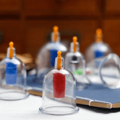
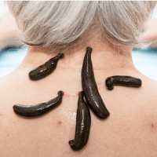

Tabiiy davolash usullari yordamida kasalliklardan xalos bo’ling.
Hijoma, manual terapiya, zuluk va turli tabiiy giyohlar eng ko’p uchraydigan kasalliklarni yengishda yordam beradi. Sog’ligingizni o’z ishining professionallariga ishonib topshiring.
Qabulga yozilishXizmatlar
-

Hijoma
Imom Termiziy Abdulloh ibn Abbos raziyallohu anhumodan rivoyat qilgan hadisda rasululloh sallallohu alayhi va sallam dedilar: «Sizlar hijoma qiladigan kunlaringizning eng yaxshisi 17, 19 va 21-kunlardir» (bu kunlar hijrij-kamariy hisobdagi oylar kunlaridir).
-
Manual terapiya
Imom Termiziy Abdulloh ibn Abbos raziyallohu anhumodan rivoyat qilgan hadisda rasululloh sallallohu alayhi va sallam dedilar: «Sizlar hijoma qiladigan kunlaringizning eng yaxshisi 17, 19 va 21-kunlardir» (bu kunlar hijrij-kamariy hisobdagi oylar kunlaridir).
-

Zuluk bilan davolash
Girudoterapiya (lot. hirūdō — «zuluk» va qad. yun. θεραπεία — «davolash») — ma’lum kasalliklarni dorivor zuluklar (Hirudo medicinalis) yordamida davolash usuli. Fizioterapevtik muolaja, muqobil tibbiyotga oid sanaladi. Bunday zuluklar ushbu kichik sinf chuvchalchanglariga oid yagona tur hisoblanadi, qolganlari shifobaxsh ta’sir ko’rsatmaydi..